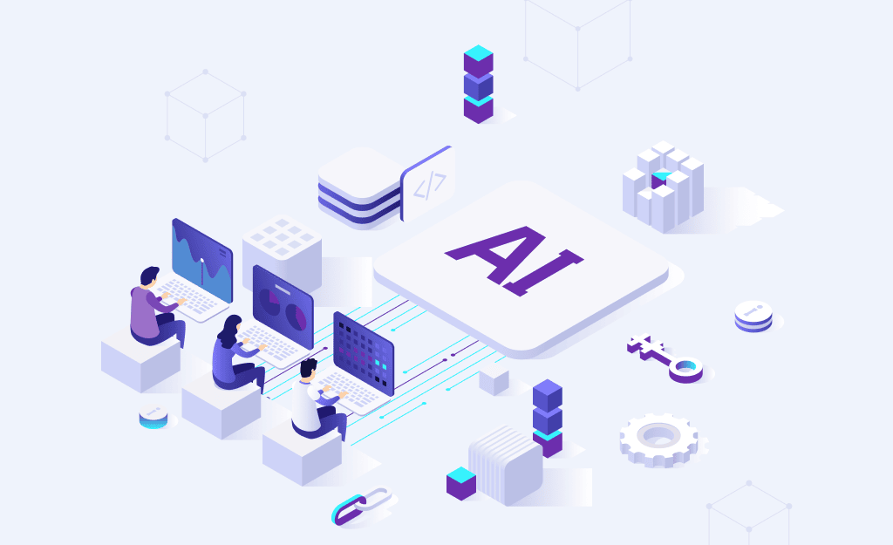

De escribir a especificar
El valor se mueve hacia describir bien el problema y los criterios de éxito.
¿Usamos la IA como un asistente, o estamos dependiendo de ella?
De completar una línea de código a ejecutar tareas completas por su cuenta: así evolucionó la IA dentro del trabajo de los desarrolladores.
Herramientas como GitHub Copilot sugieren la siguiente línea o función mientras escribes.
Aparecen los asistentes conversacionales: pegas un error y recibes explicación y arreglo.
Nace el Model Context Protocol (MCP), una forma común de que un modelo use herramientas externas.
Agentes como Claude Code o Codex leen proyectos enteros, ejecutan comandos, corrigen y repiten hasta cumplir el objetivo.

La IA ayuda a convertir ideas vagas en requisitos claros, historias de usuario y listas de tareas. También puede detectar contradicciones entre requisitos y estimar el alcance de forma preliminar.
Propone arquitecturas, esquemas de base de datos y bocetos de interfaz, y explica ventajas y desventajas de cada opción. Es útil para explorar alternativas rápido.
Genera funciones, componentes y pruebas, traduce entre lenguajes y refactoriza código antiguo. Los agentes pueden además navegar el repositorio, ejecutar el programa y corregir sus propios errores.
Crea casos de prueba, propone casos límite que nadie pensó y ayuda a reproducir errores a partir de un reporte. También sirve para revisar código y señalar posibles vulnerabilidades.
Escribe scripts de despliegue, documenta, analiza registros y puede migrar sistemas heredados cuando existe una forma de comprobar automáticamente que el resultado coincide con el original.

El valor se mueve hacia describir bien el problema y los criterios de éxito.
Leer, cuestionar y verificar código ajeno (o generado) se vuelve una habilidad central.
Con la IA haciendo lo repetitivo, importa más la arquitectura y entender el negocio.